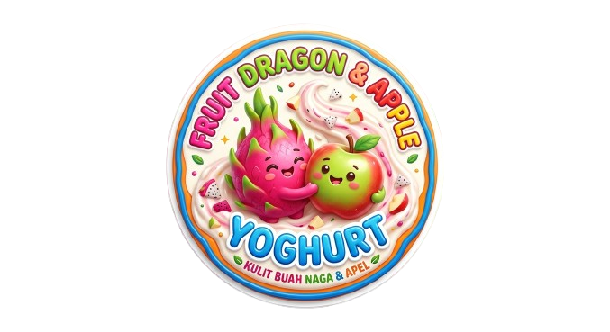
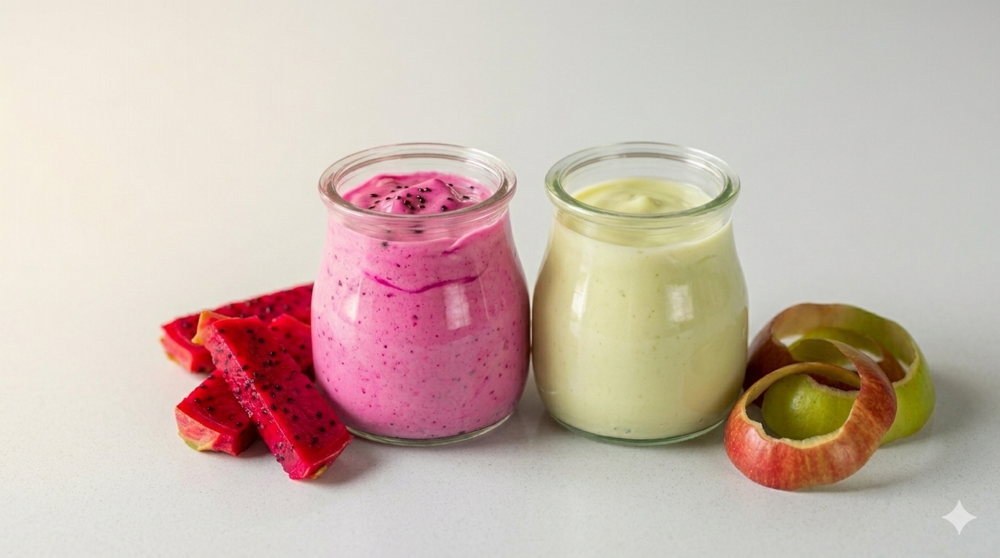
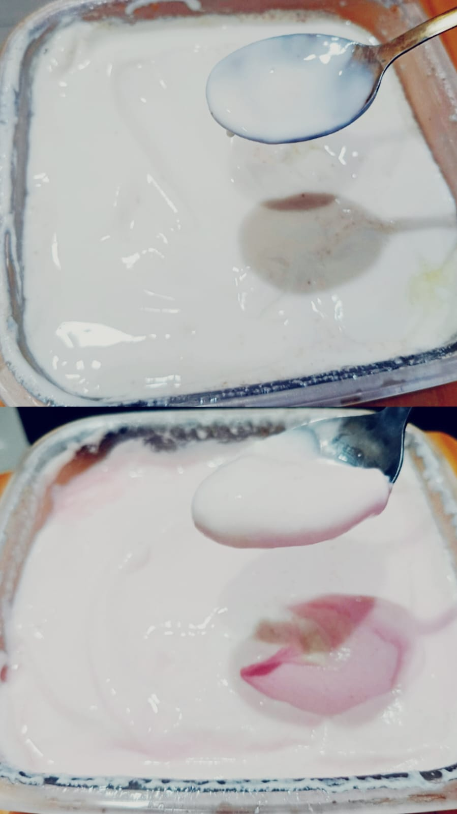

Penelitian ini adalah percobaan membuat yoghurt melalui fermentasi susu segar dengan memanfaatkan limbah kulit buah naga dan kulit buah apel sebagai bahan tambahan. Percobaan ini melihat bagaimana penggunaan kulit buah yang biasanya dibuang memengaruhi hasil akhir yoghurt (asam (pH), tekstur, rasa). Kulit buah yang kaya nutrisi bisa memberikan karakteristik unik pada yoghurt.
Learn more
Yoghurt merupakan produk fermentasi susu yang populer karena kandungan probiotiknya. Terdapat berbagai varian rasa yoghurt, khususnya varian rasa buah-buahan. Sedangkan kulit dari buah-buahan hanya menjadi limbah organik. Nyatanya, kulit buah naga dan kulit buah apel memiliki potensi nutrisi yang tinggi yang sering kali terbuang sia-sia. Penelitian ini dilakukan untuk memanfaatkan limbah kulit buah tersebut sebagai bahan tambahan dalam fermentasi fresh milk. Selain itu, penulis juga meneliti perbedaan karakteristik akhir pada yoghurt, khususnya pada aspek perubahan pH, tekstur, dan rasa yang dihasilkan dari penggunaan kedua yoghurt dengan 2 kulit buah yang berbeda.
1. Siapkan 1 buah naga dan 4 apel. Cuci dengan air dan kupas kulitnya. Kemudian, potong bagian kasar kulitnya.
2. Iris kedua buah tersebut menjadi bagian kecil-kecil dan pisahkan keduanya.
3. Blender masing-masing kulit buah dengan air hingga halus.
4. Saring kedua kulit buah agar mendapat sari atau filtrat dari kulit buah.
5. Siapkan 2 fresh milk, thermometer, 2 panci, dan starter yoghurt.
6. Tuang 950 ml susu dan sari kulit buah ke masing-masing panci dan panaskan hingga mencapai suhu 76℃-80℃ sambil diaduk agar tercampur rata. Ukur suhu susu dengan thermometer.
7. Jika sudah mencapai suhu yang diinginkan, matikan api kompor dan tunggu hingga suhu susu mencapai 40℃.
8. Jika sudah mencapai suhu 40℃, masukkan 2-3 sendok starter yoghurt ke dalam masing-masing panci yang berisi susu dan aduk merata.
9. Tuang kedua campuran susu dengan kulit buah naga mau pun dengan kulit apel ke 2 wadah kaca yang berbeda dan tutup rapat-rapat.
10. Balut kedua wadah dengan handuk atau kain tebal untuk menjaga suhu susu agar tetap hangat. Kemudian, simpan di tempat yang, gelap, tidak terganggu, dan hangat. Pada penelitian ini, yoghurt disimpan dalam oven yang tidak menyala selama proses fermentasi.
11. Biarkan kedua yoghurt berfermentasi selama maksimal 24 jam.
